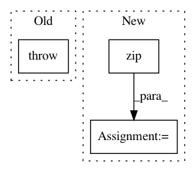

8202e627c7d7897728d824c84a6d479ca84a9098,keras/backend/cntk_backend.py,,slice,#Any#Any#Any#,2579
Before Change
def slice(x, start, size):
raise NotImplementedError
def _reshape_batch(x, shape):
// there is a bug in cntk 2.1"s unpack_batch implementation
After Change
def slice(x, start, size):
if not (len(int_shape(x)) == len(start) == len(size)):
raise ValueError("The dimension and the size of indices should match.")
out = x[tuple([py_slice(i, i + j) for (i, j) in zip(start, size)])]
out._keras_shape = tuple(size)
return out
In pattern: SUPERPATTERN
Frequency: 4
Non-data size: 3
Instances
Project Name: keras-team/keras
Commit Name: 8202e627c7d7897728d824c84a6d479ca84a9098
Time: 2019-03-25
Author: me@taehoonlee.com
File Name: keras/backend/cntk_backend.py
Class Name:
Method Name: slice
Project Name: keras-team/keras
Commit Name: 8202e627c7d7897728d824c84a6d479ca84a9098
Time: 2019-03-25
Author: me@taehoonlee.com
File Name: keras/backend/theano_backend.py
Class Name:
Method Name: slice
Project Name: dmlc/gluon-cv
Commit Name: 4b8716fd4bd6f462a9db9eee958f2508576ec019
Time: 2018-06-15
Author: cheungchih@gmail.com
File Name: gluoncv/utils/metrics/coco_detection.py
Class Name: COCODetectionMetric
Method Name: __init__
Project Name: keras-team/keras
Commit Name: 365f621b24631a03f995e3b30e1800d327e42fc1
Time: 2017-04-24
Author: joshuarchin@gmail.com
File Name: keras/layers/recurrent.py
Class Name: Recurrent
Method Name: reset_states